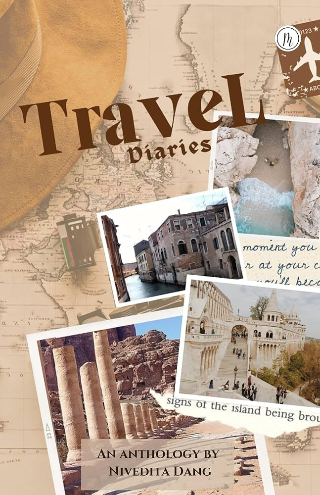

✈️ Cultural Tourism: Travel with Purpose

Travel is evolving. More than ever, people are seeking experiences that go beyond sightseeing—they want to connect with local cultures, learn from communities, and understand the places they visit on a deeper level. Welcome to the world of cultural tourism.
What is Cultural Tourism?
Cultural tourism is travel focused on experiencing the culture, traditions, and way of life of a destination. It's about more than visiting famous landmarks—it's about engaging with local communities, participating in traditional practices, and gaining authentic insights into how people live.
This approach to travel emphasizes meaningful connections over superficial experiences. Instead of rushing through a checklist of attractions, cultural travelers immerse themselves in local life, often staying longer in fewer places to develop genuine understanding.
"Travel is about the gorgeous feeling of teetering in the unknown." — Anthony Bourdain
Why Cultural Tourism Matters
Cultural tourism benefits both travelers and host communities. For travelers, it offers deeper, more memorable experiences and authentic connections. For communities, it provides economic opportunities while helping preserve traditions that might otherwise be lost.
When done right, cultural tourism can:
- Preserve heritage: Economic value encourages communities to maintain traditions
- Support local economies: Money stays in communities rather than large corporations
- Foster understanding: Cross-cultural exchange breaks down stereotypes
- Create meaningful work: Local guides, artisans, and cultural practitioners thrive
Destinations Leading the Way
Around the world, communities are embracing cultural tourism as a sustainable development strategy. In Morocco, visitors can stay in restored riads and learn traditional crafts from master artisans. In Japan, homestays in rural villages offer glimpses of life beyond the neon cities. In Ghana, the Year of Return initiative has welcomed millions of African diaspora visitors to connect with their ancestral roots.
Indigenous communities in places like New Zealand, Australia, and the Americas are also leading the way, sharing their cultures on their own terms and creating tourism experiences that respect traditions while educating visitors.
How to Travel Culturally
Cultural travel doesn't require going to remote places. Here's how to bring cultural depth to any trip:
- Stay with locals: Choose homestays, guesthouses, or locally-owned accommodations over international chains
- Take cooking classes: Food is central to culture—learn to make local dishes from residents
- Hire local guides: They offer perspectives you won't find in guidebooks
- Learn basic phrases: A few words in the local language opens doors
- Shop local: Buy from artisans and markets, not souvenir shops
- Eat local: Avoid international chains; discover family-run restaurants
Travel Tip: The 10-10-10 Rule
When planning your trip, aim to spend 10% of your budget on experiences, stay 10 kilometers outside tourist centers, and engage with at least 10 local people in meaningful conversation. This simple framework transforms any trip into a cultural experience.
Respectful Travel: A Guide
Cultural tourism requires sensitivity and respect. Before visiting, research local customs and etiquette. Ask before taking photos of people. Dress appropriately for cultural sites. Remember that you're a guest in someone's home—act accordingly.
Be aware of overtourism and its impacts. Some destinations are suffering from too many visitors, which can damage both environments and communities. Consider visiting during off-seasons, exploring alternative destinations, and supporting policies that manage tourist numbers sustainably.
The Transformative Power of Cultural Travel
For many travelers, cultural immersion becomes transformative. When you share a meal with a family in their home, learn a traditional craft from a master artisan, or celebrate a local festival alongside residents, travel becomes more than a vacation—it becomes education, connection, and growth.
These experiences stay with us. They challenge assumptions, broaden perspectives, and remind us of our shared humanity across cultures. In a world that often emphasizes differences, cultural tourism celebrates what connects us.
Looking Ahead
The future of travel is cultural. As travelers seek deeper meaning in their journeys, destinations that offer authentic, respectful cultural experiences will thrive. This shift benefits everyone—travelers find richer experiences, communities gain sustainable livelihoods, and cultural traditions find new life and appreciation.
Whether you're planning your next trip or dreaming of future adventures, consider traveling with purpose. Seek connection over consumption, understanding over observation. The world has so much to offer when we travel not just to see, but to understand.
← Back to Stories